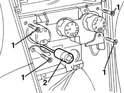
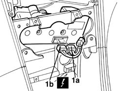
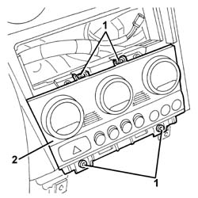
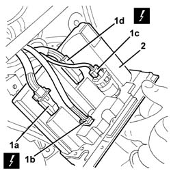

5040D18 air conditioner control unit - r r
- Path
- Procedures > 50 AUXILIARY UNITS > 5040 AIR CONDITIONING CASING AND COMPONENTS > 5040D air conditioner controls > 5040D18 air conditioner control unit - r r
- Kind
- repair procedure (removal / refitting; the operation number is the code)
- Applies to
- all engines; all production periods
- Interactive page
- https://sloeber94.github.io/elrnDB-a156/en/#/3238342
Applies to: all engines; all production periods; only with equipment: Air Conditioner
 Removing
Removing
 Refitting
Refitting5040D22 control (one) of air conditioner control support - arrange
2125C24 gear lever knob - r + r
7040A60 under facia trim - r+r
1. Unscrew the bolts
2. Release the passenger compartment temperature sensor and move it.

Applies to: all engines; all production periods; only with equipment: Air Conditioner
1. Turn the control unit in a suitable position and disconnect the electrical connections (1a, 1b).
 | Name | Connector |
|---|---|---|
1a | Climate control system control unit |
| Name | Connector |
|---|---|---|
1b | Climate control system control unit |

Applies to: all engines; all production periods; only with equipment: Air Conditioner
Refitting
RemovingFit the control unit in the housing and connect the electrical connections.
Fit the passenger compartment temperature sensor in place.
Tighten the screws.
Test the operation of the system using an Examiner or other diagnostic equipment.
7040A60 under facia trim - r+r
2125C24 gear lever knob - r + r
5040D22 control (one) of air conditioner control support - arrange
Applies to: all engines; production: da 03/02 a 09/03, da 10/03; only with equipment: Air Conditioner
Removing
Refitting7040A65 passenger compartment box lock , one , r r (left and right sides)
7040L37 gear lever plate - r r
1. Unscrew the bolts
2. Partly extract the control unit.

Applies to: all engines; production: da 03/02 a 09/03, da 10/03; only with equipment: Air Conditioner
1. Disconnect the electrical connections (1a, 1b, 1c, 1d).
| Name | Connector |
|---|---|---|
1a | Climate control system control unit |
| Name | Connector |
|---|---|---|
1b | Hazard warning lights switch |
| Name | Connector |
|---|---|---|
1c | Passenger compartment air sensor |
| Name | Connector |
|---|---|---|
1d | Climate control system control unit |
2. Recover the air conditioning control unit.
If necessary, 5010D30 passenger compartment air temperature sensor - r+r following electrical wiring check operation

Applies to: all engines; production: da 03/02 a 09/03, da 10/03; only with equipment: Air Conditioner
Refitting
RemovingCheck that the control unit is undamaged.
If necessary, 5010D30 passenger compartment air temperature sensor - r+r following electrical wiring check operation
Connect the electrical connection.
Place the control unit in position and secure it using the bolts.
7040L37 gear lever plate - r r
7040A65 passenger compartment box lock , one , r r (left and right sides)
Topics linked from this page (13)
- 2125C24 gear lever knob - r + r
- 5010D30 passenger compartment air temperature sensor - r+r following electrical wiring check operation
- 5040D22 control (one) of air conditioner control support - arrange
- 5570T80 car radio unit - r+r
- 7040A60 under facia trim - r+r
- 7040A65 passenger compartment box lock , one , r r
- 7040L20 tunnel trim - r r
- 7040L37 gear lever plate - r r
- 7065C42 ashtray (one) r+r
- H20 Hazard warning lights switch
- K89 Passenger compartment air sensor
- M70A Climate control system control unit ( AIR CONDITIONING )
- M70B Climate control system control unit ( AIR CONDITIONING )
Topics that link to this page (19)
- K07 MILOMETER NOT SWITCHING TO SHOW OUTSIDE TEMPERATURE
- S61 DASHBOARD CREAKING
- 5010C24 upper air outlet on facia - r r
- 5010D30 passenger compartment air temperature sensor - r+r following electrical wiring check operation
- 5020L10 additional heater system boiler - r r
- 5040B30 expansion valve (tube orifice) - r+r
- 5040B60 air conditioner system ecu - r + r
- 5040C10 air conditioner box - r+r
- 5040C50 air conditioner heater radiator - r+r
- 5040D52 air inlet and recirculation flap actuator - r r
- 5040D76 air contitioner distribution flap control motor - r r
- 5040D84 air conditioner left hand air mixer flap control motor - r r
- 5040D86 air conditioner right hand air mixer flap control motor - r r
- 5040D90 air conditioner system wiring bundle - r r
- 5560C51 combined analogue control panel - r+r or replace
- 5560C64 electronic unit(infocentre) - replace after checking operation with special equipment
- 7040A10 instrument facia trim - r+r
- 7040A25 central facia trim - r r
- 7040A97 facia trim support beam - r r